Some Principles of Portable Antennas to Strive For
This talk was originally prepared for the 2003 Dayton FDIM Symposium
This talk was originally prepared for the 2003 Dayton FDIM Symposium
2003 marks the 8th FDIM symposium to which I have tried to make a contribution to our array of antenna ideas. This year, I want to present some principles that apply to portable antennas. We may not be able to achieve them all, but the more of them that we can implement, the greater success we are likely to have in our portable and field operations.
Unfortunately, I have seen too many operations (many documented with published photos) showing folks using the finest QRP equipment with some of the worst antennas imaginable. Sometimes, circumstances force us to load up the proverbial bedsprings, and we can make contacts--at least a few. However, when you have only 5 watts of power--or less--you owe it to yourself to develop the finest field antenna you can imagine--and then carry. Of course, that last qualification is the limiting factor. You must be able to get the antenna to the site, erect it, and then take it down and home again. Before we are done, I shall pass along a few techniques to help make that possible--at least in some circumstances.
Since this is not a mystery story, I shall list the basic principles that I have in mind right here--and then expand upon them.
My 6th principle is simply that no presentation should have more than 5 principles.
Look before you leap. The first principle simply says to reconnoiter the territory that you will be using before you go there to operate. Find out what is there that may be useful, what is there that may get in the way, and what is not there that you will need. I knew an operator who carefully prepared a doublet and an end-fed wire for his vacation, which sent him into the New Mexican wastelands, where there was not a tree or shrub more than 4' high to tie off the ends.
My example is extreme, but not so far fetched as it sounds. If you will use a horizontal wire or even an inverted-L, you need at least a pair of tall supports and a way to reach them to tie off the ends. If you will use a vertical, you should know that you can set it up reliably. A base pipe that works well in clay and loam is not necessarily adequate in sand or rock. Even a guy-wire/rope needs soil that will handle the anchor.
The more complex the field operation, the more important it becomes to do advanced planning. Too often, even in seemingly well-planned Field Day operations, the first person to arrive with an antenna selects the best spot for his/her antenna and all others arriving later must squeeze themselves into any remaining space. Little wonder why scores are not higher.
The planning process is mostly a thinking and paper operation, which is not very exciting compared to the actual effort to make contacts. However, it can make actual operation even more exciting by improving the chances for more successful contacts. The process is very straightforward.
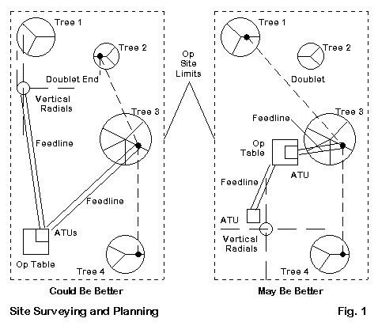
Fig. 1 sketches the very same area twice. It has 4 trees, each with a pattern of eligible limbs. I have omitted some potential details to keep the sketch from getting too crowded. I shall assume that the most convenient place from which to approach the site is the lower left corner. It may be nearest to a trail or a parking area. As you can see from the left version of the sketch, the initial plan is to dump all of the heavy gear as near to the approach as possible. Then the antenna field can take shape using the spaces left over. The operative principle behind the antenna arrangement is to keep the antennas as far from the equipment as feasible within the limits of the site.
It seems reasonable to use the nearly aligned trees on the right edge of the site to support the doublet, even if one end must hang down. To give the vertical antenna clearance from the doublet, the plan calls for placing it near the left edge of the site, even if that means reducing the radial field to only 3 effective radials stretched out on the grass. The ATUs, one for each antenna, go on the operating table, with feedlines to the individual antennas.
Now let's re-plan the site. Let's move the operating table to a more central location. Yes, it is nearer the doublet, but we shall let height provide separation and take advantage of the shorter feedline run that goes upward from the ATU with less chance of encountering objects that might disrupt balance. Our next move is to run the doublet between trees 1 and 4. This arrangement allows the doublet to be horizontal throughout, with no vertical end to couple into the vertical antenna. The increased angle will have little effect on patterns. We shall also move the vertical to the open area that formerly held the operating table. It has no immediately nearby tree to absorb its energy. The radials extend for their full length in each direction. Note that the ATU is at the base of the vertical, a better position if there will be significant SWR levels at any operating frequency. The cable to the table is a length of matched coax.
I only label the right-side plan as possibly better, because the sketches lack significant details that you would enter into your real planning drawings. A boulder where you want to place the operating table could ruin everything. As well, high and low spots in the area might dictate some right and wrong places to set the vertical antenna. A hornet's nest on the limb from which you wish to hang the doublet might call for last minute revisions. Nevertheless, the right-hand sketch does widely separate the antennas and, to the degree possible, account for the most efficient transfer of power--both incoming and outgoing--from the antennas to the operating position, while minimizing the potential for unwanted interactions.
Once you have reconnoitered the site and planned its layout, your next task is to gather all of the materials needed to make it a reality. Everyone thinks of the equipment, the antennas, and the feedlines. However, have you thought about the materials necessary to get the antennas in place and to keep them there throughout the event? It usually pays to have at least 2 means of getting lines over limbs, because trees have a habit of coming in odd shapes. As well, it also pays to not let the antenna wire contact a limb, but to suspend it below the limb with a rope and ring. A vertical antenna may require guying, even if the maker declares that no guying is necessary. Loose soil and careless wanders can defeat such claims in a flash. Do not forget the equipment anchors. QRP gear tends to be small and light. Hence, it crawls off operating tables and finds it way to the ground when no one is looking. In general, plan on having as much (or more) weight devoted to set-up and maintenance materials as to the operating equipment, antennas, and feedlines.
The bottom line is a modification to the basic principle: Look--and think and plan--before you leap.
The higher, the better. When it comes to antennas, this principle is as old as radio itself. We often think of the principle as applicable to horizontal antennas, like dipoles and multi-band doublets. However, it also applies to many types of vertical antennas. Let's look at what happens when we take a few representative vertical antennas that you might carry to the field and elevate them. We shall compare antenna base heights of 0, 5, 10, 15, and 20 feet--the last height likely only being available to those with significant equipment. Our samples will consist of a vertical monopole with radials and a vertical dipole without radials. Fig. 2 shows the general outlines of what we shall do with a few models. Although the samples will be full-size, while the vertical antennas that you carry to the field may be shortened and loaded, the general patterns of the analysis will apply.
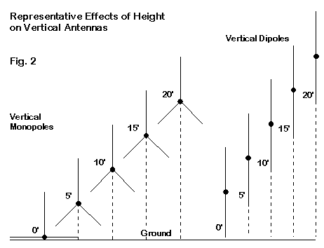
The variations in patterns created by elevating a vertical antenna may seem subtle, but they can become important under certain operating assumptions. For our small sample, we shall take vertical monopoles using 4 radials--about the average size radial field used for most field expeditions. As we elevate the antenna base from ground level past 5, 10, 15, and up to 20 feet above average ground, we shall droop the radials back toward the ground. In part, this move reflects using the radials also as part of the guying system. The drooping radials also let us set the impedance close to 50 Ohms for a direct match with coax. Let's look at the information in tabular form and as a series of overlaid elevation patterns. The abbreviation 'wl' means wavelength.
4-Radial Vertical Monopoles over Average Ground Band: 10 Meters (28.4 MHz) Height (ft) Height (wl) Gain (dBi) TO Angle (deg) Feed Z (R +/- jX Ohms) 0 --- -0.17 27 42 + j 38 5 0.14 0.73 22 54 + j 3 10 0.29 1.32 17 52 + j 6 15 0.43 1.50 14 46 - j 1 20 0.58 1.63 45 49 + j 0 1.47 13 Band: 20 Meters (14.1 MHz) Height (ft) Height (wl) Gain (dBi) TO Angle (deg) Feed Z (R +/- jX Ohms) 0 --- -0.32 26 44 + j 35 5 0.07 0.20 24 46 + j 4 10 0.14 0.49 22 56 + j 4 15 0.22 0.80 19 50 + j 1 20 0.29 0.97 17 41 + j 4 Band: 40 Meters (7.1 MHz) Height (ft) Height (wl) Gain (dBi) TO Angle (deg) Feed Z (R +/- jX Ohms) 0 --- -0.43 25 46 + j 35 5 0.04 -0.15 24 45 + j 3 10 0.07 0.06 23 50 + j 5 15 0.11 0.21 22 54 + j 1 20 0.14 0.32 21 59 - j 0
Clearly, the greatest change in pattern shape (Fig. 3) and performance occurs on 10 meters, because each 5' of height is twice the change on 20 and 4 times the change on 40 in terms of wavelengths. On 40 meters, we acquire about a dB of gain and a lower elevation angle of maximum radiation, also called the take-off or TO angle. On 20, the gain increment is greater, as is the lowering of the elevation angle. On 10 meters, we see more radical changes in the elevation pattern, most notably the emergence of the higher lobe until it becomes also the strongest lobe.
Whether the 10-meter pattern at 20' is useful depends upon the operating goals. On DXpeditions, the pattern only brings in noise to a remote island. However, for landlocked field operations looking for shorter- and longer-range contacts, the higher-angle radiation may be beneficial. The double entry for 20' on 10 meters indicates the angle and strength of both the lobes of the pattern.
We may perform a similar analysis for vertical monopoles, which will be twice as long above the base height as the monopoles. Still, they are usable and generally require no radials. So let's see what happens. Remember that the feedpoint of a vertical dipole with the same base height as a corresponding monopole is about where the tip of the monopole falls. Therefore, we should expect to find lower TO angles. As well, the vertical dipole, when sufficiently above the ground, will show a typical dipole feedpoint impedance of about 70 Ohms. The feedline should come away from a dipole at right angles for as far as may be feasible. However, I have heard of successful vertical dipoles that run the coax inside the lower end (assuming the use of a tube), with a 1:1 choke/balun at the point of exit. As with all field antennas, you should test all assembly, disassembly, and operating details long in advance of carrying the antenna to the field.
Vertical Dipoles over Average Ground Band: 10 Meters (28.4 MHz) Height (ft) Height (wl) Gain (dBi) TO Angle (deg) Feed Z (R +/- jX Ohms) 0 --- 0.40 19 96 + j 49 5 0.14 1.23 16 71 - j 4 10 0.29 1.42 13 70 + j 2 15 0.43 1.59 12 73 + j 2 20 0.58 2.38 35 74 + j 5 2.07 11 Band: 20 Meters (14.1 MHz) Height (ft) Height (wl) Gain (dBi) TO Angle (deg) Feed Z (R +/- jX Ohms) 0 --- 0.03 19 100 + j 14 5 0.07 0.56 17 80 - j 2 10 0.14 0.84 15 72 - j 0 15 0.22 0.93 14 70 + j 4 20 0.29 0.94 13 71 + j 7 Band: 40 Meters (7.1 MHz) Height (ft) Height (wl) Gain (dBi) TO Angle (deg) Feed Z (R +/- jX Ohms) 0 --- -0.24 19 111 + j 22 5 0.04 0.08 17 90 + j 3 10 0.07 0.24 16 81 + j 0 15 0.11 0.32 15 76 + j 1 20 0.14 0.35 14 72 + j 3
Once more, we find the greatest variation in operation on 10 meters, with lesser changes on 20 and 40 meters. The gain of the dipoles is slightly higher than that of the monopoles, except at the highest altitude. Indeed, we can see a diminishing gain advantage as we raise each dipole higher. That phenomenon occurs because each of the monopoles is becoming a dipole the higher that we raise it. The drooping radials are no longer a symmetrical horizontal affair that cancels out its own radiation. To the degree that the radials have a vertical component to their slope, they also contribute to the vertically polarized radiation of the entire antenna. The VHF Ringo Ranger, with its conical lower section, is actually a form of a vertical dipole.
The patterns in Fig. 4 show that the vertical dipole's greater overall height and higher feedpoint create pattern variations more quickly than do the corresponding monopoles. Even the 10-meter dominant lobe at a base-height of 20' has a lower TO angle than the corresponding lobe of the monopole. As usual, the changes are less severe on 20 and 40 meters.
Even with a base near ground level, the vertical dipole has one more advantage over a monopole with the same base height, especially where the operating field is not a completely clear plane. There is a widely reported phenomenon that goes under many names. I tend to call it "RF-eating shrubbery," based on my own experience of moving an old Hy-Gain 14AVQ from ground level to the rooftop of a one-story home. With only 4 radials per band, performance improved dramatically, far more than the tables would suggest. A vertical dipole tends to avoid the RF absorbers by having its feedpoint elevated to begin with. Hence, commercial antennas that are vertical dipoles or simulate them by having the high current area of the antenna elevated for each band, have become very popular.
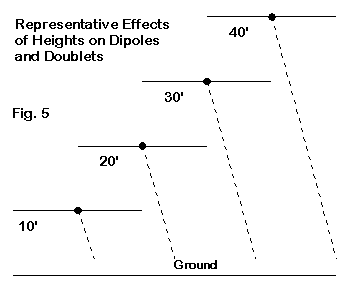
Although the effects of height on verticals may seem somewhat subtle, they become dramatic applied to horizontal dipoles and doublets. Fig. 5 shows a small sample of dipoles at heights of 10, 20, 30, and 40 feet above average ground. We shall sample near-resonant dipoles at 10, 20, and 40 meters at each of these heights, and then show the corresponding elevation patterns. In this case, however, the patterns are taken along the axis of maximum gain, since a dipole pattern at field heights may range from a broad oval to, at best, a bi-directional peanut at the maximum height.
Horizontal Dipoles over Average Ground Band: 10 Meters (28.4 MHz) Height (ft) Height (wl) Gain (dBi) TO Angle (deg) Feed Z (R +/- jX Ohms) 10 0.29 5.68 51 85 + j 6 20 0.58 7.67 24 64 - j 5 30 0.87 7.09 16 78 - j 4 40 1.15 7.84 12 69 - j 0 Band: 20 Meters (14.1 MHz) Height (ft) Height (wl) Gain (dBi) TO Angle (deg) Feed Z (R +/- jX Ohms) 10 0.14 5.33 87 61 + j 11 20 0.29 5.72 50 86 + j 1 30 0.43 6.59 32 77 - j 17 40 0.57 7.33 24 63 - j 9 Band: 40 Meters (7.1 MHz) Height (ft) Height (wl) Gain (dBi) TO Angle (deg) Feed Z (R +/- jX Ohms) 10 0.07 2.55 88 53 + j 1 20 0.14 5.71 87 61 + j 10 30 0.22 6.02 75 78 + j 9 40 0.29 5.86 50 88 - j 4
As the tables and Fig. 6 show, height is a necessary ingredient in maximizing the performance of a dipole or any other horizontally oriented antenna. The higher the antenna in terms of wavelengths above ground, the lower the TO angle of the lowest lobe and the more complex the lobe structure. The 10-meter patterns clearly show this phenomenon. In fact, a horizontal antenna does not become truly competitive with a good vertical until it is at least 3/8 wavelength above ground. In addition, if you examine the tables, you will discover that the feedpoint impedance of a dipole does not begin to stabilize until we reach the 3/8 wavelength or greater height. For heights below about 1 wavelength, there are heights less favored. If you examine the 10-meter patterns, you will discover that the 20' height shows a higher maximum gain than the 30' height. The 30' height is close to 7/8 of a wavelength, where so much energy goes upward that the lowest lobe suffers a bit.
We have performed our rudimentary examination of the effects of height on antenna performance using full-size dipoles and monopoles. However, for the sake of weight and convenient assembly, many field operators have obtained multi-band, shortened antennas. So our next question is whether size makes a significant difference, that is, significant enough for us to rethink our field antennas.
The bigger, the better--up to a point. In fact, size can make a sizable difference. As we did for our look at height, we shall explore the effects of size for both vertical and horizontal antennas. The vertical will be a 20-meter vertical monopole at ground level. We shall use the full-size antenna as our baseline data and then shorten the antenna in two steps to 3/4 full size and to 1/2 full size. For each of these two cases, we shall place the load both at the base and about halfway up the vertical element, using full-length radials throughout. Then we shall do the same for a horizontal 20-meter dipole at a height of 20'. We shall use center and mid-element loading for lengths that are 3/4 and 1/2 of the full-size antenna.
Normally, we use inductors (coils) to shorten an antenna, and coils have some losses that are a function of the Q or ratio of series reactance to series resistance. Most loading coils have a Q of 200 to 250, but I shall use a Q of 300 for our test models. Since the required loading will differ for the vertical and horizontal antennas, let's take them one at a time. Fig. 7 shows in sketch form the vertical tests.
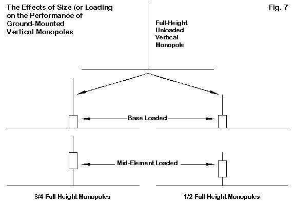
The following table summarizes the results of the test models, using the full-size monopole as a basic reference and then proceeding to the 3/4 and 1/2 size versions with base and mid-element loading coils. The mid-element coils were placed exactly half-way up the monopole, although a practical antenna may vary this position considerably. The coil reactances were varied until re-establishing resonance within +/-j1 Ohm.
Monopole Size Tests: 14.1 MHz
All antennas use 1" diameter verticals with 15' long, 0.2" diameter radials.
Length refers to the vertical element. All loading coils have a Q of 300.
Antenna Length (ft) Load: L (uH) R (Ohms) X (Ohms)
Gain (dBi) TO Angle (deg.) Feed Z (R +/- jX Ohms)
Full-Size 17.5 --- --- ---
-0.56 27 42 + j 2
3/4, Base 13.125 1.422 0.42 126
-0.78 28 19 - j 0
3/4, Mid-El 13.125 2.427 0.72 215
-0.78 27 29 + j 0
1/2, Base 8.75 3.240 0.96 287
-1.59 29 9 + j 0
1/2, Mid-El 8.75 5.395 1.59 478
-1.31 29 17 - j 0
The move from full size to 3/4 size results in a gain reduction of about 0.2 dB. However, a further reduction to half-size increases the loss of gain to around a full dB. The rate of gain reduction increases more rapidly as we get still shorter than half-size. You can estimate the effects of these losses from the patterns in Fig. 8. The advantage of using mid-element coils is less a matter of gain than it is a matter of having a higher, easier-to-match feedpoint impedance than we get with base loading coils. However, to obtain that advantage, we normally encounter greater mechanical complexity, which often translates in the field to a greater tendency to break in the middle of an operating session.
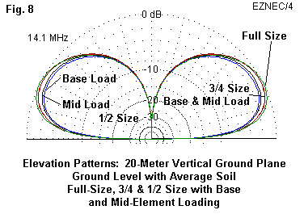
Reduced size vertical monopoles are certainly usable, but full-size versions are somewhat better and have a broader bandwidth. In fact, the operating bandwidth--using the usual 2:1 SWR standard--decreases according to the loaded element length. However, since we assume the use of an ATU at the base of the antenna, SWR will not normally be a problem, and added losses will be only those inherent to the particular type of network used in the tuner. (If you simply use coax to the antenna base and place tuner at the operating table, you will have a small additional loss due to the SWR level on the cable, and the total loss from this source will be a function of the cable length. Such cable losses will vary with the frequency of operation, increasing as one increases frequency.)
The dipole tests all used AWG #12 (0.0808" diameter) copper wire at a test height of 20' above average soil. The antennas were level, something that may not be completely feasible in most field situations if we tie off the ends of the antenna using available structures. Fig. 9 shows the layout of the tests, followed by the tabular results.
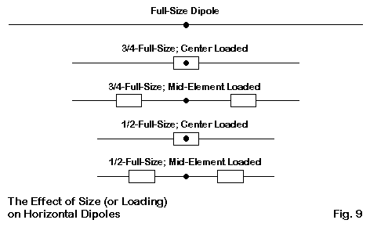
Dipole Size Tests: 14.0 MHz
All antennas use AWG #12 wire. All loading coils have a Q of 300. Center loading coils are single units.
However, mid-element loading uses 2 coils each of the size listed. Hence, the total loading is twice the values shown.
Antenna Length (ft) Load: L (uH) R (Ohms) X (Ohms)
Gain (dBi) TO Angle (deg.) Feed Z (R +/- jX Ohms)
Full-Size 33.88 --- --- ---
5.74 50 85 + j 0
3/4, Center 25.41 4.309 1.26 379
5.42 51 40 + j 0
3/4, Mid-El 25.41 3.968 1.16 349
5.45 51 59 + j 0
1/2, Center 16.94 9.947 2.92 875
4.66 50 18 - j 1
1/2, Mid-El 16.94 9.095 2.67 800
4.76 52 34 + j 1
We see the same pattern in the loaded, shortened dipole that we saw in the monopole. Total mid-element loading requirements are nearly twice the center-loading requirement in terms of coil size and losses. Hence, for any given level of shortening, mid-element loads to not significantly increase gain, although they do set the feedpoint impedance at a more usable value if we do not use a tuner. Both center-loading and mid-element loading coils present mechanical challenges by adding to the complexity and weight of the antenna structure. The more complex the mechanical structure of a field antenna, the greater the likelihood of difficulties during an extended field operation.
Nevertheless, as the patterns in Fig. 10 show, we do not lose much by way of pattern. The worst-case gain is about 1 dB lower than the gain for a full-size dipole, about the same drop that we encountered with the vertical monopole. Do not try to directly compare the patterns for the monopoles with those for the dipole, since the outer ring in each case refers to a different gain level. However, you may wish to estimate the dipole gain at an angle of 25 degrees and compare that estimate to the maximum gain of the monopoles at their TO angles. The dipoles are down by about 2 dB or so and thus have more strength along the axis of maximum bi-directional gain than the monopoles have in their omni-directional patterns.
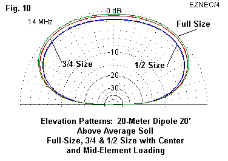
We can effect considerable simplicity in compact dipole design by eliminating the loading coils. Instead, let's complete the antenna simply by dropping the elements downward once we have created a half-length dipole. The arrangement, which we can call an inverted-U, looks like the outline sketch in Fig. 11.
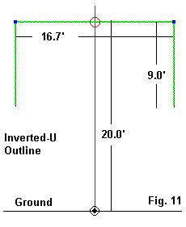
The general dimensions shown for a 20-meter inverted-U are for AWG #12 wire, although they tend not to change much for any size elements. A single mast would support a tubular horizontal element with drooping end wires. Perhaps the one disadvantage of this design is that it requires a 20' mast to keep the ends of the elements well above the level that people can reach. Even at QRP power levels, the voltage on the ends of a dipole can reach uncomfortable, if not dangerous, levels.
The inverted-U performs a little better than a half-size dipole at the same height when that dipole uses loading coils. The performance is a little less robust than a 3/4-size or a full-size dipole. The elevation pattern shown in Fig. 12 provides the relevant data. It also shows the -3-dB or half-power points for the antenna. You may generally apply these angle values to any of the dipoles that we have examined.
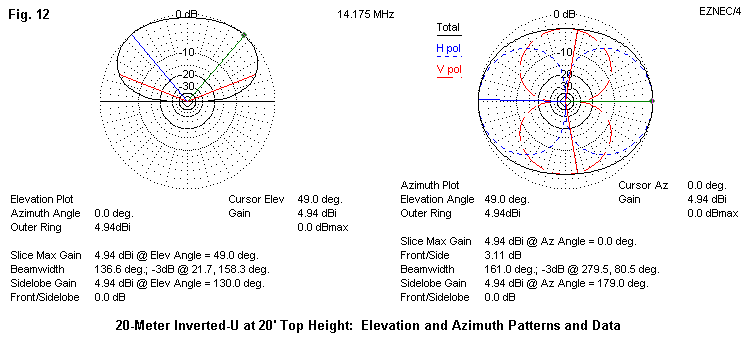
The azimuth pattern shows that the inverted-U has significant, but not overriding vertically polarized radiation from the drooping ends. Hence, for any given height, its azimuth pattern--to the right in Fig. 12--will be a bit more oval than corresponding patterns for loaded dipoles.
The design frequency for the inverted-U modeled here is 14.175 MHz, the center of the band. The reason that I used this frequency rather than some frequency closer to the CW end of the band is simple. Using linear elements rather than loading coils provides a very broad SWR curve, while the drooping elements reduce the feedpoint impedance from the 70 Ohms that we associate with a full-size linear dipole down to just about 50 Ohms. Fig. 13 shows the modeled SWR curve for the inverted-U.
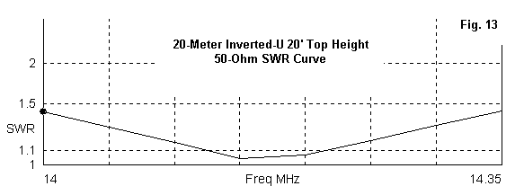
Before we close the book on our five principles of field antennas, we shall return to the inverted-U to show you how to build a 5-band version, suitable for 20 through 10 meters, an antenna that will be about 36" long for carrying. And the cost will be well under $50, even if you buy all of the parts (excluding the mast) new. However, before we go there--and perhaps to create a mood of suspense--let's return to the general issue that surrounds my note to keep the ends of the inverted-U element well above the hands of even the tallest person at the field operation site.
As the guy said, safety above all else. Safety is often a remote thought at remote field operations. However, it is much easier to plan safety into a field operation than it is to transport an injured person from the remote site back to civilized territory that has medical care. Hence, it must be an integral part of every planned field operation.
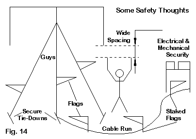
Fig. 14 sums up some of the most overlooked safety matters in a field set-up. The safety principle that we have mentioned is illustrated by the stick figure and the antenna end: a safe spacing between the furthest reach of a person and the end of an antenna. Antenna ends are normally high-voltage points and must not be touchable, even accidentally, during operation.
The figure also points to a few other safety features. The simple word "guys" signals the need to make sure that everything you erect in the field should be mechanically secure from any anticipated breeze. The proper location of an antenna is sufficiently remote from the operating site so that if the antenna falls, it cannot fall on anyone--or on any expensive equipment. Having taken that precaution, you should also brace the installation so that it has the least chance to fall. In most cases, 3 or 4 guy ropes will adequately stabilize anything tall, including masts and vertical antennas. If the vertical structure is more than 20' tall, then use two sets of guys, one every 10' upward. 3/16" nylon rope is light enough for you to carry extra in the field pack to replace worn guys. Also carry a cigarette lighter to seal the rope ends to prevent fraying.
No guy rope or wire is any better than its tie-down. Do not depend upon finding rocks or limbs at the field site to use as tie-down weights. Bring long stakes that you can drive into the ground. The longer--within carrying limitations--the better. As well, learn one or two good knots that do not slip, and apply those knots to the rope-to-stake junctions.
Fig. 14 also shows several pennant-shaped items called flags. It does not require the dark of night or a morning fog to make the visible invisible. There is a fog caused by the excitement of the venture that blinds every participant at one time or another. Murphy's Law says that the fog will strike when an individual is nearest to something that will stop the field operation in its tracks. You may not be able to totally defeat Murphy, but you can make his task more difficult. Place flags on the guys at the most visible level. An added flag on the tie-down stake is not a bad idea to prevent a trip that will bring down the antenna.
Add flags on short stakes along any cable run to forewarn wanderers of its presence. A snagged cable can break--usually at the connectors. As well, it can drag down the antenna. On the other end of the line, it can drag the equipment off the operating table. The figure only shows a ground-level coax run. You should add flags to any twinlead rising from an ATU up to a doublet overhead. Indeed, make a general rule for yourself that anything that you may encounter from toes up to outstretched hands gets a flag.
Flags need not be formal pennants. At a fabric store, look for remnants of the brightest, most iridescent cloth that you can find. A yard of this material will be light to carry and allow you to rip strips for flags that only the absolutely color-blind person can miss.
Our focus on making the site elements safe from accidental encounters should not exclude the other safety factors that we normally think about. All equipment must be electrically safe, with no exposed electrical contacts. If a power supply or battery has such contacts, invent a cover for them to prevent accidental contact--either by a person's fingers or the wandering screwdriver shaft. A shorted battery means a short field trip, not to mention damage to your favorite screwdriver.
Do not overlook the mechanical security of your equipment. Much low-power equipment is also very light. Add a power and RF cable, and you have situation that we can call a drag--right off the operating table to the ground. You may use any number of techniques to prevent gravity from making your equipment disappear. Some field operators develop compartmentalized cases to hold all of the gear in place during use. You may also create a base-plate and use L-brackets to hold down the gear. You may also create a table-top with shallow bins into which each item fits. The exact system that you create will vary with the type of operation and the amount of equipment to be anchored.
Anchoring equipment requires pre-trip planning. In fact, every facet of making a field operation safe and secure demands as much time devoted to thought in advance of the trip as will be taken by the trip itself. These brief notes are only designed to alert you to the possible issues and a few ways of handling them. The actual number of ways of making a field operation safe and secure are as many and varied as the creative minds of field operators.
Pre-planning should include two important steps. The first is to clean everything that will go on the trip. This activity should focus on anything in the set-up that will make metal-to-metal contact, including connectors and joints in any antenna structure. The second step follows onto the first: test everything at home to ensure that it has the highest probability of working at the site.
Nothing blunts a safety principle like too many words. As incomplete as this listing may be, I shall bring it to an end here, hoping that I have said just enough for you to carry on from this point. Forethought is your greatest weapon against Murphy's Law that reads "If it can happen and it ain't good, then it will."
Avoid nuts (and bolts). Accidents are not the only events that bring field operations to a screeching halt. One of the most trivial but effective ways to stop an operation is to lose a nut or bolt in the grass or dirt and never find it again. So invent ways of preventing that loss. I use two rules.
1. Any nut or bolt used in the field set-up must be permanently tightened and never loosened.
2. Every field connection must use something other than a nut and bolt.
There are a few wing-nut connections for ground wires and the like that may be unavoidable. For these, I add a dab of Plasti-Dip to the end of the threaded contact to prevent the wing nut from coming off completely.
However, let's use this final principle to do two things. First, I shall introduce you to two of my favorite field connectors. They are not the last word in connections for field antennas, but they may inspire you to more closely examine the available hardware to develop even better ones for your type of field operations.
Second, to give you an idea of how we can apply at least one of these field connection-makers, we shall return to the inverted-U antenna and see what it may have to offer. Again, it is not the last word in field dipoles, but it has some features well worth considering, including its light weight, common materials, and low cost.
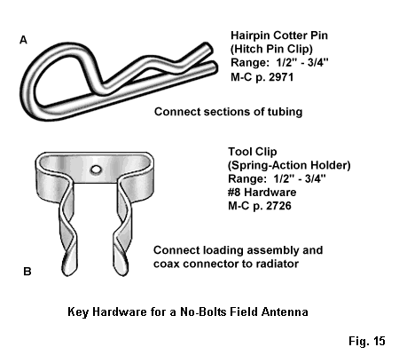
Fig. 15 shows two of my favorite hardware items for any type of field antenna using aluminum tubing. The data includes a reference to the McMasters-Carr catalog (http://www.macmasters.com). However, many sizes may be available in the specialty hardware section of home centers. The catalog will present you with a quandary. The hardware is available in both stainless steel and plated versions. Stainless steel offers a rust-proof finish, but plated hardware has more sizes and is half the cost.
Suppose that we are constructing an antenna using aluminum tubes and need to bridge a gap with a component, such as a coax connector or a loading coil. Of course, we mechanically plug the electrical gap by using a short length of fiberglass rod or tube, or a CPVC tube. The tool clip, sometimes sold as a "broom-handle" clip, solves our bridging problem, as shown in Fig. 16.
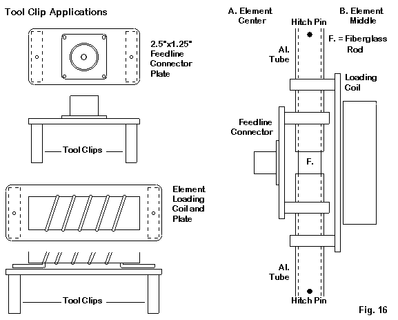
With a small piece of Plexiglas, we can create a plate to hold a connector or coil. The clips form the mechanical connection to the tubing and the component terminals. Use 3/16" to 1/4" thick Plexiglas, because the flat end of the clip is not really flat. In fact, it is curved and springy, so that when you (permanently) nut and bolt it to the plate, it exerts considerable bending pressure on thinner plastics. Flattening the mounting portion presses the clip portion together so that it makes excellent mechanical and electrical contact with the tubing.
My preference for home-made antennas is already showing, and wherever possible, I like to use aluminum tubing. However, I long ago learned not to use just any tubing, just as I learned to build my own antennas to be as good or better than anything on the commercial market. So I use 6063-T832 tubing for almost every antenna project, except when I need aluminum rods, which are available in 6061-T6. The aluminum stock is available, if not locally, from mail order houses, such as Texas Towers, and comes in 6' lengths. 6063-T832 tubes have 0.58" walls, which means that you can nest the tubes in 1/8" diameter increments. Fig. 17 shows a typical nest of tubes from 0.75" diameter down to 0.375" diameter, with a quarter-inch rod thrown in for good measure.
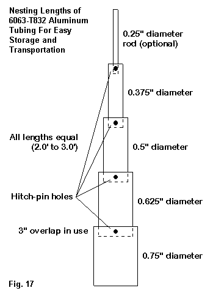
If we carefully de-burr and clean both the inside and outside of the tubes, they will slide together when not in use to make a compact single item to carry for a monopole--or a pair of transportable items for a dipole. Do not file the cut tube edges. Instead, sand them smooth with fine aluminum oxide sandpaper to avoid leaving particles of another metal on them. Periodically clean the outsides with a plastic pad and clean the insides with a long-handle bottle-brush. Do not use a lubricant to facilitate nesting, since we shall depend on the metal-to-metal contact of clean aluminum for electrical contact between sections of an element.
Some folks who have only used heavier aluminum conduit for antenna elements do not realize how light a 6063-T832 element can be. The following table lists the weight per foot of each size of tubing, along with the weight of some aluminum rods. From the table, you can estimate the weight of almost any kind of element you may wish to make and then add in the weight of any loading or center-structure that you add.
Table of Aluminum Tubing Weight Per Linear Foot 6063-T832 Tubing 6061-T6 Rods Diameter Lb/ft Diameter Lb/ft 0.375" 0.044 0.1875 0.032 0.5" 0.095 0.25 0.058 0.625" 0.104 0.75" 0.127 0.875 0.150 1.0" 0.202 1.125" 0.229 1.25" 0.255 1.375" 0.283 1.5" 0.309
I included some larger tubing sizes, because someone might wish to design a nested mast composed of tubing sections. However, such a mast can hold only the lightest dipole assembly and requires guying at least every 10' above ground.
To form the basic element for our inverted-U, let's create a full-size 10-meter dipole. Fig. 18 shows the basic structure.
The 3/4" section to the far left will be part of the center-plate assembly that we shall show separately. We only need to note here the hole for the hitch-pin clip that we shall use at each junction to fasten the sections together. Nested, each half-element is only 36" long, using a 3" overlap at each junction. Open, we use hitch-pin clips to mechanically fasten the sections. Each hole requires that we carefully drill through both section of tubing on one operation to ensure a tight-fitting hole and accurate alignment. You may wish to mark each hole on the joining tubes in a way that does not interfere with nesting. A jig made from scrap wood and some form of drill press makes the drilling of perfectly aligned holes much easier.
The element--composed of 2 half-elements and the center plate--will cover the first MHz of 10 meters with less than 2:1 SWR using the tubing sizes and lengths shown. For each of the bands from 12 through 20 meters, we need to add wire extensions that hang down and that we can readily change. However, let's first complete the dipole with a center plate assembly that is permanently assembled and hence, has a few nuts and bolts.
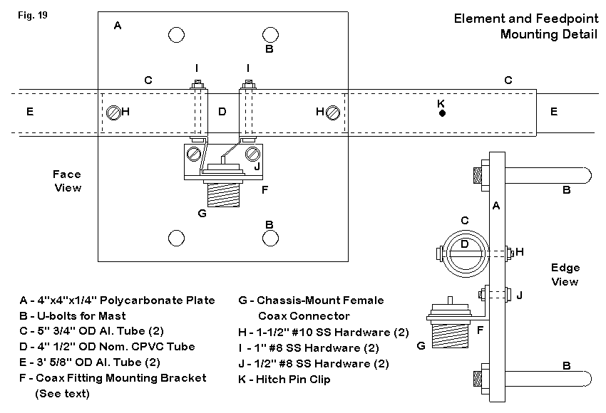
I used a scrap of 1/4" thick polycarbonate that I happened to have as a based for the center assembly, as shown in Fig. 19. I also had stainless steel U-bolts, so I pressed them into service to fasten the plate to the mast. However, you may substitute a short mast section--either metal or PVC--and use single bolts and self-locking nuts to fasten the mast and plate together. In fact, you may develop an entirely different dipole center assembly, so long as it has a means of connecting the cable to the antenna and a way of connecting the element halves to the center gap and junction.
1/2" nominal CPVC fits inside the short lengths of scrap 0.75" tubing. The tubing keeps the element halves aligned and minimizes the necessary hardware to fasten the element to the plate. I used a short section of 1" by 1" by 1/16" aluminum L-stock to hold the female coax connector. The entire assembly weighs under 1 lb, including U-bolts. The entire remainder of the element, including hitch-pin clips weighs less than 2 lb. So we have a 3-lb 10-meter dipole.
Before going any further, let me note an additional advantage of hitch-pin clips as a mechanical fastener. They are considerably larger than any screw or nut or bolt that you might use to join element sections. As a result, they do not get lost on the ground quite so easily. However, let's go one step further in the hardware preservation plan. You can add brightly colored tape flags to the loop of each pin. With that added precaution, you will have to dig a hole and bury a clip before you can lose it.
However, the clips provide mechanical fastening of the sections. Electrical contact is a matter of clean aluminum meeting clean aluminum. If you clean the element sections before each field adventure, you will have no problems at all. However, do NOT use this technique for a home antenna that will stay in the weather for months and years. The oxide build-up will gradually increase the resistance between tube sections and degrade antenna performance.
Now we are ready to expand the coverage of the antenna for all bands from 10 through 20 meters. For 12-20 meters, you can add vertical wires to the ends of the 3/8" diameter end pieces of tubing. Almost any wire from AWG #18 up to AWG #14 will do. A convenient wire to use is AWG #17 fence wire, which is cheap, plentiful, and very adequate to the task. Fig. 20 shows how I attached my wires to the end of the 10-meter element, once more using a hitch-pin clip.
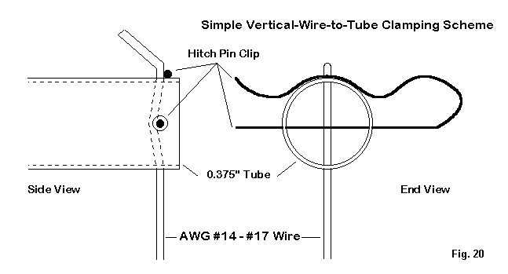
I drilled a pair of holes through the tube at right angles to each other. One through-hole is the size of the straight section of the hitch-pin clip. The other is just large enough to pass the end wire. With the wire in place and bent over slightly, I install a hitch-pin clip, pressing the wire to one side as the clip goes through its holes. The combined bends make a very secure mount and good electrical contact. However, when I remove the clip, the end wire pulls right out.
I have pairs of end wires for each band wound on empty plastic ribbon spools. I tug them straight before installation, but slight curves remaining in the wires have no affect on the antenna performance. The wires are remarkable consistent in length, whatever the wire size, since the tubing sections dominate the high-current section of the antenna. The following table provides the length needed for each band, using the dimensions set for the 10-meter basic dipole. I have added the modeled performance on each band for reference, assuming a height of 20' above average soil. Remember that the 20' height is necessary on 20 meters as a safety measure.
End-Wire Lengths need for the Inverted-U
Band Wire Length Modeled Performance Gain Elevation Impedance
(inches) at 20' Above Average (dBi) Angle (deg) R +/- jX
Ground: (Ohms)
10 ----- 7.6 24 65 - j 2
12 16 7.2 27 67 - j 8
15 38 6.4 32 69 - j 8
17 62 5.7 38 65 - j 4
20 108 4.9 49 52 + j 4
A spool of aluminum fence wire contains an endless supply of replacement end wires, in case you break one, step on another, and inadvertently use a third as a tie-down. I recommend a non-conductive mast, if you have one, to prevent an accidental resonance on one or another band. With a 20' mast, 15-meters is the band most likely to show some SWR anomalies due to coupling between the end wires and the mast. As noted in the safety section, use guys on whatever mast you take to the field. Do not rely on tripod bases if you plan to have the antenna up more than a few minutes.
The inverted-U will perform as well as any commercial field dipole on the market. The big difference is that you will have a difficult time spending $50 on the inverted-U, even if you have to buy a double pocket full of hitch-pin clips to meet the minimum order requirement for a mail-order house.
I present the invert-U as only one of many possible light-weight field antennas that you can build yourself. Using the same techniques, you can build vertical monopoles, including loaded versions for 80, 40, and 30 meters. Tool clips can hold separate loading coils for each band. You can construct base supports from PVC. (See recent issues of QRP Quarterly for the application of these techniques to vertical monopoles. QST will eventually publish a complete background and construction article on the inverted-U. The basic idea is not new, but the use of hitch-pin clips to make it work is relatively recent.)
I respect the major commercial portable/field antennas on the market--and I have systematically modeled some of them. Still, there is no reason why the budget-minded QRP field operator cannot have a first-rate set of antennas to use on his trips and still have a few dollars left over to pay for the gas and some food for the adventure. At the same time, there is also no good reason why those antennas must depend on field assembly using easily lost nuts and bolts when there is so much hardware available that is both secure and hard to lose.
I have come to the end of my list of principles. They are all ideals, and the real circumstances of a portable or field operations may dictate that you have to violate one or more of them. With respect to performance, you at least will know what to expect by the amount that you violate principles like being high and large. If there is one principle that you should not violate under any but the most dire emergency circumstances, it is the principle of safety. We can replace good equipment, but not good operators and friends.
Updated 5-24-2003. © L. B. Cebik, W4RNL. Data may be used for personal purposes, but may not be reproduced for publication in print or any other medium without permission of the author.